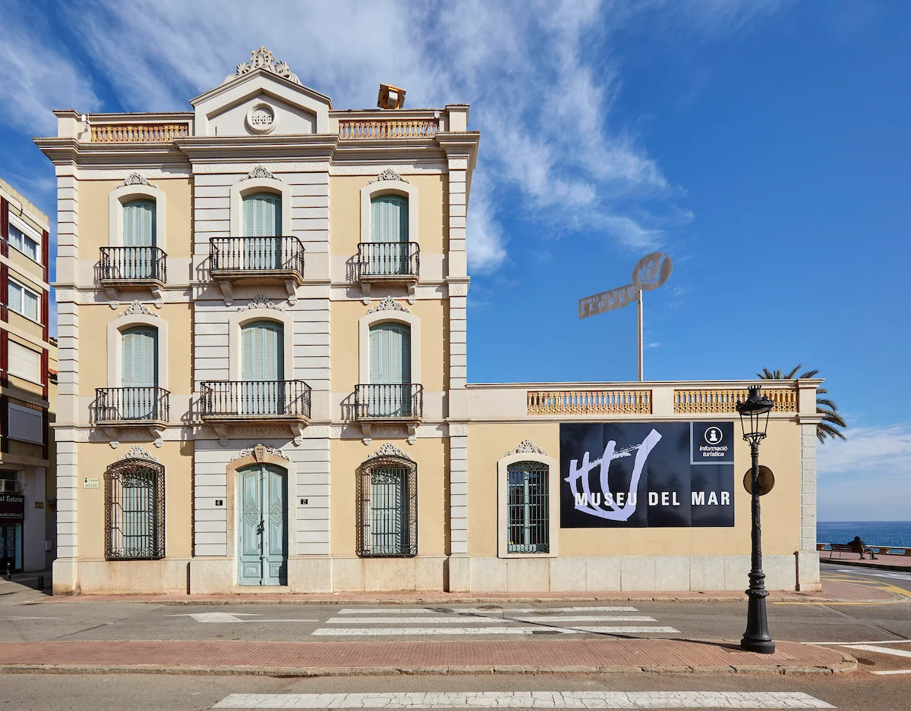
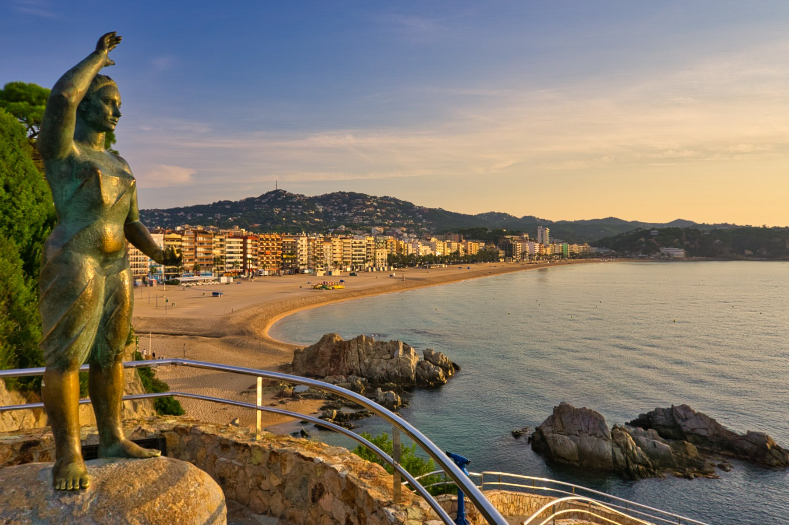
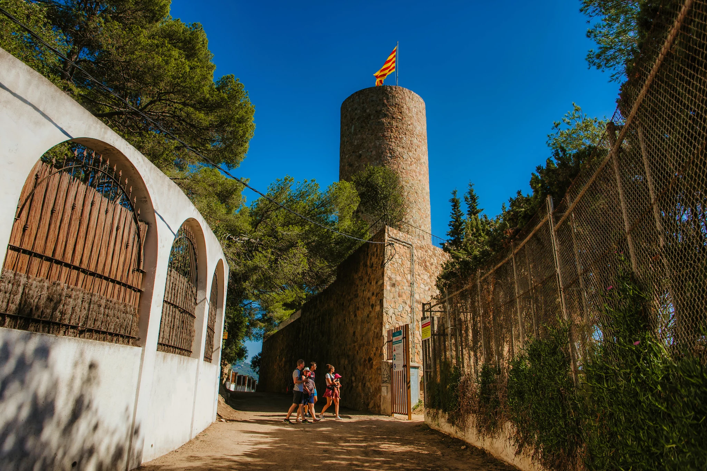
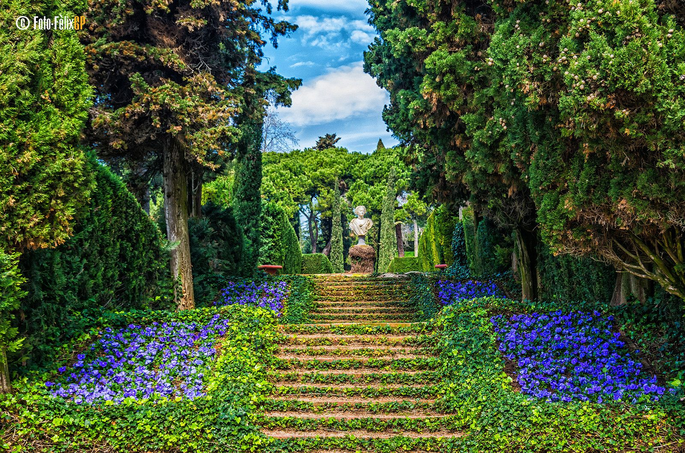
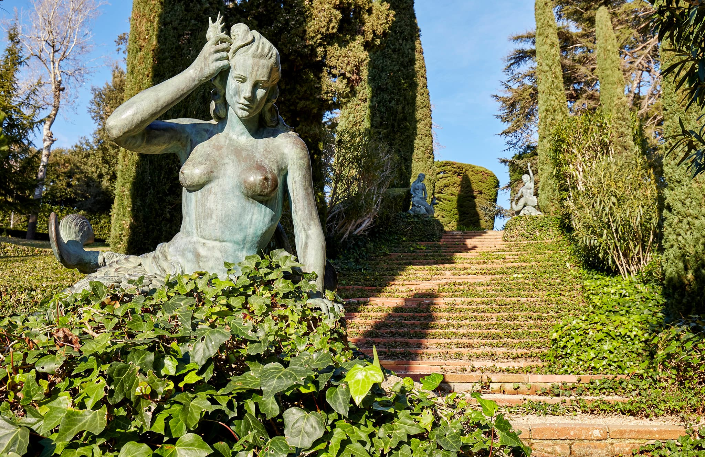
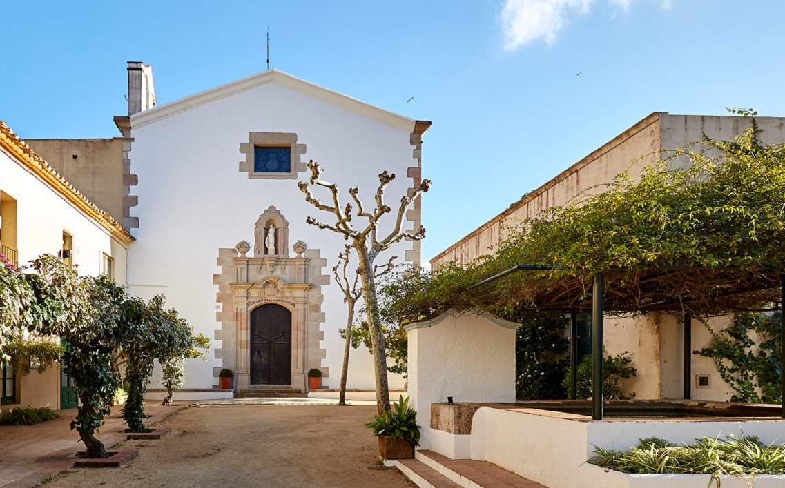
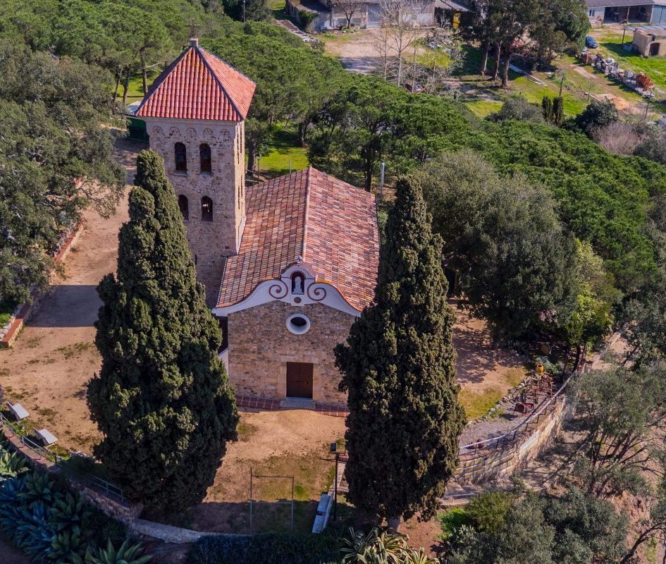
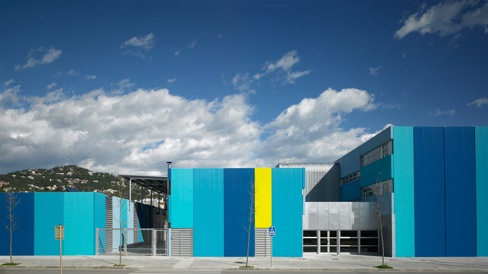
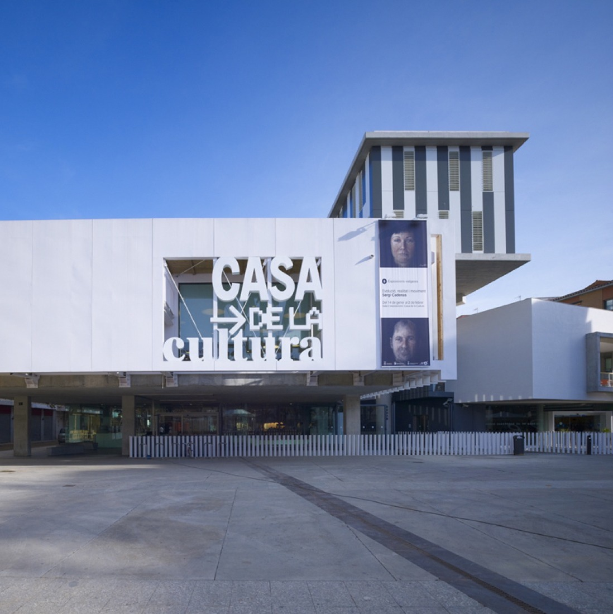

MAPA

Museu del Mar
Lliberada Parés

Dona Marinera
Sra Margarita Puig Esqueu

Castell St Joan
Sicardis de Montsoriu

Jardins de Sta Clotilde
Clotilde de Rocamora
- Espai Natural
- Temps: 30 min

Escultures Sirenes
Maria Llimona i Benet

Ermita Sta Cristina
Santa Cristina
- Espai Natural / Religiós
- Temps: 35 min

St Pere del Bosc
Dolors Montserdà
- Espai Natural
- Temps: 45 min

Barri de la Càndida
Càndida Masgrau i Campeny
Ermita de les Alegries
Senyora del Rossell
- Espai Religiós
- Temps: 35 min

Escola Àngels Alemany i Boris
Àngels Alemany i Boris

Barri del Rieral
Gertrudis Moret i Farigola
Biblioteca
Antònia Pares i Macià

Carrer Venècia
Rosita Mistos